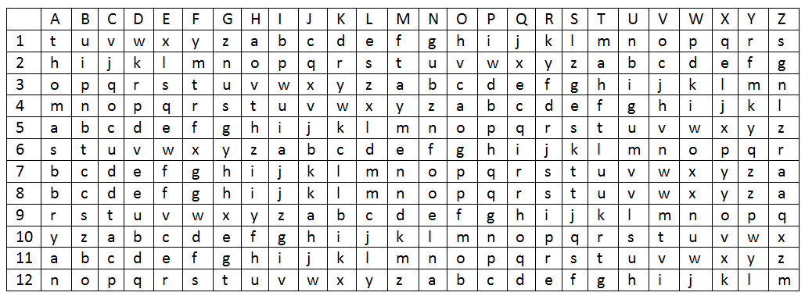
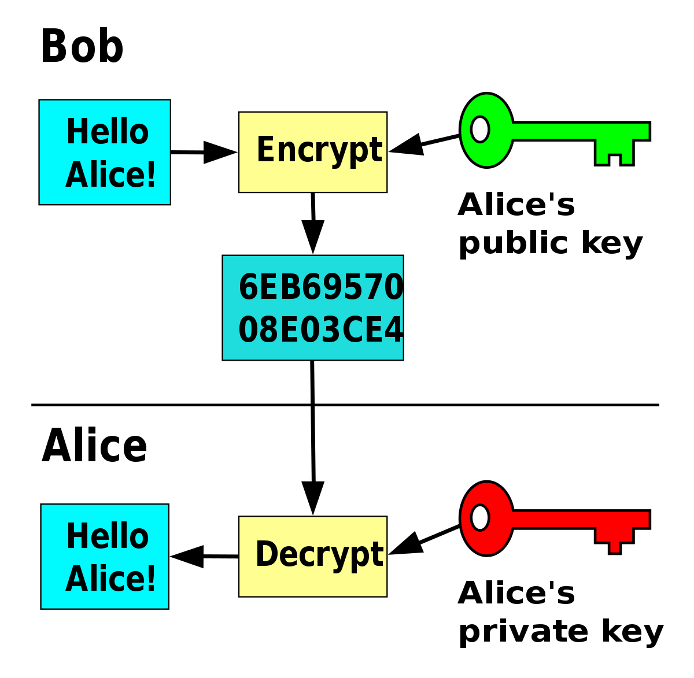

Theory
Cryptography is the study and practice of techniques for secure communication in the presence of third parties called adversaries. It deals with developing and analyzing protocols which prevents malicious third parties from retrieving information being shared between two entities thereby following the various aspects of information security.
- Plaintext and Ciphertext
- Cipher
- Key
- Symmetric key (also called secret-key) cryptography algorithms
- Asymmetric (also called public-key) cryptography algorithms
- Overview
- Bob chooses two very large prime numbers p and q.
- Bob multiplies the above two primes to find n, the modulus for encryption and decryption. n = p X q.
- Bob calculates another number Փ = (p -1) X (q - 1).
- Bob chooses a random integer e. He then calculates d so that d x e=1 mod Փ .
- Bob announces e and n to the public; he keeps Փ and d secret.
- Encryption
- Decryption
- Restriction
Cryptography Components
The original message, before being transformed, is called plaintext. After the message is transformed, it is called ciphertext. An encryption algorithm transforms the plaintext into ciphertext; a decryption algorithm transforms the ciphertext back into plaintext.

In cryptography, a cipher (or cypher) is an algorithm for performing encryption or decryption—a series of well-defined steps that can be followed as a procedure.
A key is a number (or a set of numbers) that the cipher, as an algorithm, operates on.
Categories of Cryptography
In symmetric-key cryptography, the same key is used by both parties. The sender uses this key and an encryption algorithm to encrypt data; the receiver uses the same key and the corresponding decryption algorithm to decrypt the data. In symmetric-key cryptography, the same key is used by the sender (for encryption) and the receiver (for decryption)
Examples:
XOR Cipher
Data Encryption Standard (DES)
Advanced Encryption Standard (AES)
In asymmetric or public-key cryptography, there are two keys: a private key and a public key. The private key is kept by the receiver. The public key is announced to the public. Examples:
RSA
Diffie-Hellman

RSA ALGORITHM
The most common public key algorithm is RSA, named for its inventors Rivest, Shamir, and Adleman (RSA). It uses two numbers, e and d, as the public and private keys In RSA, e and n are announced to the public; d and Φ (PHI) are kept secret. Steps to select the private and public keys:
Anyone who needs to send a message to Bob can use n and e. For example, if Alice needs to send a message to Bob, she can change the message, usually a short one, to an integer. This is the plaintext. She then calculates the ciphertext, using e and n. C = P^e ( mod n ) Alice sends C, the ciphertext, to Bob.
Bob keeps Փ and d private. When he receives the ciphertext, he uses his private key d to decrypt the message: P = C^d ( mod n )
For RSA to work, the value of P must be less than the value of n. If P is a large number, the plaintext needs to be divided into blocks to make P less than n